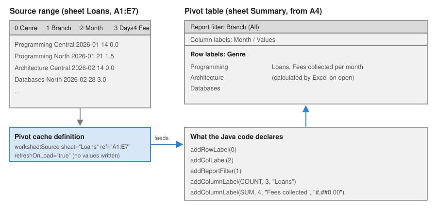

Tables, Named Ranges & Pivot Tables
|
This content was generated with the assistance of AI and should be verified against the official documentation before being relied on in production. |
Baseline date: 2026-10-09. This page was written against Apache POI 5.5.1 (the latest release on that date; the 6.0 line
is announced but has not been released), Java 21 and later, Spring Boot 4.x on Spring Framework 7 and Jakarta EE 11. It
covers three features that give a range of cells a name or a structure instead of a bare address: Excel tables
(XSSFTable), named ranges (the Name interface) and pivot tables (XSSFPivotTable). All three work through the
poi-ooxml jar; only named ranges also exist for the legacy .xls format. The examples extend the Bookshelf
books-inventory.xlsx and the loans data of the section landing page. The cell,
sheet and workbook basics are in Spreadsheet Usermodel Basics,
and the formula syntax and evaluation used by structured references in
Formulas & Evaluation.
The three features at a glance
| Feature | What it gives you | Where it lives in the file | Support in POI 5.5.1 |
|---|---|---|---|
Table |
A named, styled range with a header row, optional totals row, filter buttons and column names that formulas can use
( |
|
|
Named range |
A name for a cell, a range or a formula, usable in formulas, validation lists, print areas and charts. |
|
|
Pivot table |
A summary of a source range, grouped by row and column fields with a function per value field. |
|
|
None of the three is calculated or drawn by POI. A table is a definition that Excel renders; a name is a label for a formula; a pivot table is a recipe that Excel executes when it opens the file. Where POI can compute something (for example a formula that uses a table column or a name), it goes through the formula evaluator.
Excel tables with XSSFTable
What a table is and why use one
An Excel table (menu Insert, Table, also called a list object) turns a rectangular range into a unit with its own identity. Compared with a plain range it adds:
-
a name (
tblBooks) that formulas, validation lists and other tools can refer to without knowing where the data ends; -
a header row whose texts become column names, so a formula can say
tblBooks[Price]instead ofD2:D5; -
automatic growth: when a person types under the last row in Excel, the table, its formulas and its filter expand;
-
a style (banded rows, bold header) and filter buttons on the header;
-
an optional totals row with a function per column.
For a Bookshelf export the benefits are practical: the person who receives books-inventory.xlsx can add rows and
sort or filter without losing the formatting, and a pivot table or a chart that points to the table follows the data when
it grows.
How a table is stored
A table is one XML part per table. The worksheet part lists the tables it owns, and the table part carries the definition:
<!-- xl/worksheets/sheet1.xml -->
<tableParts count="1"><tablePart r:id="rId1"/></tableParts>
<!-- xl/tables/table1.xml (written by the example below) -->
<table id="1" ref="A1:F6" displayName="tblBooks" name="tblBooks" totalsRowCount="1" xmlns="...">
<autoFilter ref="A1:F5"/>
<tableColumns count="6">
<tableColumn id="1" name="ISBN" totalsRowLabel="Total"/>
<tableColumn id="2" name="Title"/>
<tableColumn id="3" name="Author"/>
<tableColumn id="4" name="Price"/>
<tableColumn id="5" name="Stock" totalsRowFunction="sum"/>
<tableColumn id="6" name="Value" totalsRowFunction="sum"/>
</tableColumns>
<tableStyleInfo name="TableStyleMedium2" showRowStripes="true" showColumnStripes="false"/>
</table>The table does not store the cell values: they stay in the sheet. The part stores only the area (ref), the names and the
formatting options. That has two consequences that explain most of the pitfalls below. The header cells and the column
names must agree, and the area must match the rows that really exist. XSSFTable keeps them in sync only partly, as
the next section shows.
The XSSFTable API
| Member | Purpose |
|---|---|
|
Creates a table over the area (header row included). The only creation method in POI 5.5.1; the area decides everything. |
|
The table name used by formulas ( |
|
One of Excel’s built-in table style names ( |
|
The generated XMLBeans bean. Needed for what the facade lacks: the filter ( |
|
The |
|
Reads or changes the area. Use these methods to resize a table; editing |
|
0-based coordinates of the whole table, header and totals row included. |
|
Layout of the table: header rows (normally 1), totals rows (0 or 1) and the data rows in between. |
|
Copies the header cell texts into the column names. POI also runs it when the workbook is written, which is why a header
renamed after |
|
Enumerate, find by name and delete tables. |
|
Whether a cell is inside the table area. |
Creating a table with a totals row and structured references
The example writes the Bookshelf catalogue as a table, adds a computed column using the structured reference to the current row, and a totals row. Read the comments: the order of the steps matters.
package bookshelf;
import java.io.File;
import java.io.IOException;
import java.io.OutputStream;
import java.nio.file.Files;
import java.util.List;
import org.apache.poi.openxml4j.exceptions.InvalidFormatException;
import org.apache.poi.ss.SpreadsheetVersion;
import org.apache.poi.ss.usermodel.Cell;
import org.apache.poi.ss.usermodel.CellStyle;
import org.apache.poi.ss.usermodel.CellType;
import org.apache.poi.ss.usermodel.DataFormat;
import org.apache.poi.ss.usermodel.FormulaEvaluator;
import org.apache.poi.ss.usermodel.Row;
import org.apache.poi.ss.util.AreaReference;
import org.apache.poi.ss.util.CellReference;
import org.apache.poi.xssf.usermodel.XSSFSheet;
import org.apache.poi.xssf.usermodel.XSSFTable;
import org.apache.poi.xssf.usermodel.XSSFWorkbook;
import org.openxmlformats.schemas.spreadsheetml.x2006.main.CTTable;
import org.openxmlformats.schemas.spreadsheetml.x2006.main.CTTableStyleInfo;
import org.openxmlformats.schemas.spreadsheetml.x2006.main.STTotalsRowFunction;
public class BooksTable {
record Book(String isbn, String title, String author, double price, int stock) { }
public static void main(String[] args) throws IOException, InvalidFormatException {
List<Book> books = List.of(
new Book("978-0-13-468599-1", "Effective Java", "Joshua Bloch", 45.50, 12),
new Book("978-0-59-651774-8", "Java Concurrency in Practice", "Brian Goetz", 52.00, 7),
new Book("978-1-61-729945-8", "Spring in Action", "Craig Walls", 49.99, 20),
new Book("978-0-13-235088-4", "Clean Code", "Robert C. Martin", 39.90, 15));
File target = new File("books-inventory.xlsx");
try (XSSFWorkbook workbook = new XSSFWorkbook()) {
XSSFSheet sheet = workbook.createSheet("Books");
DataFormat format = workbook.createDataFormat();
CellStyle money = workbook.createCellStyle();
money.setDataFormat(format.getFormat("#,##0.00"));
// 1. The header row first: the table takes its column names from these cells.
String[] headers = {"ISBN", "Title", "Author", "Price", "Stock", "Value"};
Row header = sheet.createRow(0);
for (int c = 0; c < headers.length; c++) {
header.createCell(c, CellType.STRING).setCellValue(headers[c]);
}
// 2. The data rows. The Value column uses a structured reference to the same row.
int rowIndex = 1;
for (Book book : books) {
Row row = sheet.createRow(rowIndex++);
row.createCell(0).setCellValue(book.isbn());
row.createCell(1).setCellValue(book.title());
row.createCell(2).setCellValue(book.author());
Cell price = row.createCell(3);
price.setCellValue(book.price());
price.setCellStyle(money);
row.createCell(4).setCellValue(book.stock());
row.createCell(5).setCellStyle(money); // formula is set once the table exists
}
// 3. The table covers the header, the data rows and the totals row (A1:F6). Tell POI up front
// that the last row is a totals row, so that structured references skip it.
int lastDataRow = rowIndex; // 0-based index of the totals row
AreaReference area = new AreaReference("A1:F" + (lastDataRow + 1), SpreadsheetVersion.EXCEL2007);
XSSFTable table = sheet.createTable(area);
table.setName("tblBooks");
table.setDisplayName("tblBooks");
table.setStyleName("TableStyleMedium2");
CTTable ctTable = table.getCTTable();
ctTable.setTotalsRowCount(1);
ctTable.addNewAutoFilter().setRef("A1:F" + lastDataRow); // the filter excludes the totals row
CTTableStyleInfo style = ctTable.getTableStyleInfo();
style.setShowRowStripes(true);
style.setShowColumnStripes(false);
// 4. Formulas with structured references: the parser looks the table up by name,
// so the table must exist before the first such formula is set.
for (int r = 1; r < lastDataRow; r++) {
sheet.getRow(r).getCell(5)
.setCellFormula("tblBooks[[#This Row],[Price]]*tblBooks[[#This Row],[Stock]]");
}
// 5. The totals row: cells hold the SUBTOTAL formulas, the table definition records the function.
Row totals = sheet.createRow(lastDataRow);
totals.createCell(0).setCellValue("Total");
totals.createCell(4).setCellFormula("SUBTOTAL(109,tblBooks[Stock])");
Cell totalValue = totals.createCell(5);
totalValue.setCellFormula("SUBTOTAL(109,tblBooks[Value])");
totalValue.setCellStyle(money);
ctTable.getTableColumns().getTableColumnArray(0).setTotalsRowLabel("Total");
ctTable.getTableColumns().getTableColumnArray(4).setTotalsRowFunction(STTotalsRowFunction.SUM);
ctTable.getTableColumns().getTableColumnArray(5).setTotalsRowFunction(STTotalsRowFunction.SUM);
for (int c = 0; c < headers.length; c++) {
sheet.autoSizeColumn(c);
}
// 6. Evaluate once to check that the structured references resolve.
FormulaEvaluator evaluator = workbook.getCreationHelper().createFormulaEvaluator();
System.out.println("Total value = " + evaluator.evaluate(totalValue).getNumberValue());
try (OutputStream out = Files.newOutputStream(target.toPath())) {
workbook.write(out);
}
}
// Read it back.
try (XSSFWorkbook workbook = new XSSFWorkbook(target)) {
for (XSSFTable table : workbook.getSheet("Books").getTables()) {
System.out.println(table.getName() + " " + table.getArea().formatAsString()
+ " header=" + table.getHeaderRowCount() + " totals=" + table.getTotalsRowCount()
+ " dataRows=" + table.getDataRowCount() + " style=" + table.getStyleName());
table.getColumns().forEach(column ->
System.out.println(" " + column.getColumnIndex() + " " + column.getName()));
CellReference start = table.getStartCellReference();
System.out.println(" starts at " + start.formatAsString());
}
}
}
}Source: XSSFTable Javadoc, XSSFSheet.createTable Javadoc and the official examples in poi-examples (xssf.usermodel package)
Running the example prints the evaluated total and the table properties read back from the saved file:
Total value = 2508.3
tblBooks A1:F6 header=1 totals=1 dataRows=4 style=TableStyleMedium2
0 ISBN
1 Title
2 Author
3 Price
4 Stock
5 Value
starts at A1The sheet produced by the example looks like this (the totals row is the last row of the table):
| A: ISBN | B: Title | C: Author | D: Price | E: Stock | F: Value |
|---|---|---|---|---|---|
978-0-13-468599-1 |
Effective Java |
Joshua Bloch |
45.50 |
12 |
546.00 |
978-0-59-651774-8 |
Java Concurrency in Practice |
Brian Goetz |
52.00 |
7 |
364.00 |
978-1-61-729945-8 |
Spring in Action |
Craig Walls |
49.99 |
20 |
999.80 |
978-0-13-235088-4 |
Clean Code |
Robert C. Martin |
39.90 |
15 |
598.50 |
Total |
54 |
2,508.30 |
Structured references
A structured reference is a formula syntax that names a table part instead of cells. POI’s formula parser understands it
and the evaluator resolves it against the table area, so the formulas above are evaluated by FormulaEvaluator like any
other.
| Reference | Meaning |
|---|---|
|
The data cells of column Price (header and totals row excluded). |
|
The Price cell in the row of the formula. Excel shows it as |
|
The header row, the totals row, all data cells, and the whole table. |
|
The columns from Price to Value (data cells). |
Three rules keep structured references working:
-
The table must exist before the formula.
setCellFormulaparses the text immediately and looks the table name up in the workbook. SettingtblBooks[Price]first and creating the table afterwards throwsFormulaParseException: Illegal table name. Create the cells, create the table, then set the formulas. -
Use the
Rowform, not the@shorthand, in formulas written through POI:[@Price]is how Excel displays the reference, and the stored form is[#This Row]. -
Evaluate after the table area is final. POI caches the area, and a formula evaluated against a stale area silently skips rows (see the pitfalls).
Formula syntax and the evaluator are described in Formulas & Evaluation; data validation lists that point to a table column use the same names (see Data Validation & Conditional Formatting).
Reading a table on import
An uploaded workbook that contains a table is easier to import than a bare range: the table says where the data starts, how many rows it has and what the columns are called, so the importer does not have to scan for the header row. The helper below returns the data rows as maps from column name to formatted text and skips the header and the totals row.
package bookshelf;
import java.io.File;
import java.io.IOException;
import java.util.ArrayList;
import java.util.LinkedHashMap;
import java.util.List;
import java.util.Locale;
import java.util.Map;
import org.apache.poi.openxml4j.exceptions.InvalidFormatException;
import org.apache.poi.ss.usermodel.DataFormatter;
import org.apache.poi.ss.usermodel.FormulaEvaluator;
import org.apache.poi.ss.usermodel.Row;
import org.apache.poi.xssf.usermodel.XSSFSheet;
import org.apache.poi.xssf.usermodel.XSSFTable;
import org.apache.poi.xssf.usermodel.XSSFTableColumn;
import org.apache.poi.xssf.usermodel.XSSFWorkbook;
public class ReadTable {
/** Reads the data rows of a table as maps from column name to formatted cell text. */
static List<Map<String, String>> readRows(XSSFWorkbook workbook, String tableName) {
XSSFTable table = workbook.getTable(tableName);
if (table == null) {
throw new IllegalArgumentException("No table named " + tableName);
}
XSSFSheet sheet = table.getXSSFSheet();
DataFormatter formatter = new DataFormatter(Locale.ENGLISH);
FormulaEvaluator evaluator = workbook.getCreationHelper().createFormulaEvaluator();
int firstData = table.getStartRowIndex() + table.getHeaderRowCount();
int lastData = table.getEndRowIndex() - table.getTotalsRowCount();
List<Map<String, String>> rows = new ArrayList<>();
for (int r = firstData; r <= lastData; r++) {
Row row = sheet.getRow(r);
if (row == null) {
continue;
}
Map<String, String> values = new LinkedHashMap<>();
for (XSSFTableColumn column : table.getColumns()) {
int cellIndex = table.getStartColIndex() + column.getColumnIndex();
values.put(column.getName(), formatter.formatCellValue(row.getCell(cellIndex), evaluator));
}
rows.add(values);
}
return rows;
}
public static void main(String[] args) throws IOException, InvalidFormatException {
try (XSSFWorkbook workbook = new XSSFWorkbook(new File("books-inventory.xlsx"))) {
readRows(workbook, "tblBooks").forEach(System.out::println);
}
}
}Source: XSSFTable Javadoc and DataFormatter Javadoc
{ISBN=978-0-13-468599-1, Title=Effective Java, Author=Joshua Bloch, Price=45.50, Stock=12, Value=546.00}
{ISBN=978-0-59-651774-8, Title=Java Concurrency in Practice, Author=Brian Goetz, Price=52.00, Stock=7, Value=364.00}
...The FormulaEvaluator argument is not decoration. POI writes formulas without a cached result, so formatCellValue(cell)
without an evaluator returns the formula text (tblBooks[[#This Row],[Price]]*...) for such a file. Workbooks saved by
Excel carry cached results, and DataFormatter shows them; files generated by other libraries often do not. POI 6.0 is
announced to make DataFormatter use cached formula values by default, which would change the first case; passing an
evaluator keeps the code correct in both. See
Dates, Numbers & DataFormatter.
Limits and pitfalls of tables
| Topic | Behaviour | What to do |
|---|---|---|
Header cells |
Column names are copied from the header cells when the workbook is written. A numeric header cell becomes the column
name |
Write the headers as strings and make them unique before |
Table and display names |
|
Validate names yourself; prefix them ( |
Stale area |
|
Pass the final area to |
Totals row |
There is no |
Write the row yourself, with |
Auto-filter |
The filter range excludes the totals row. A filter over the whole area makes Excel report a problem. |
Set |
Overlap |
Two tables must not overlap each other or a merged region. POI does not check. |
Allocate areas from a single source of truth and leave a blank column or row between tables. |
Formulas in new rows |
When a person adds a row in Excel, the table fills calculated columns only if the column stores a
|
Pre-fill the formula in the rows you create; use a template (see Templates & Modifying Workbooks) when the calculated column must continue automatically. |
Streaming |
|
Write the sheet with SXSSF and apply a plain auto-filter ( |
Legacy format |
|
Use |
Named ranges with Name
What a name is
A defined name gives a label to a cell, a range, a constant or a formula. It is the Excel feature behind Formulas,
Name Manager and the box left of the formula bar. Names make formulas readable (C2*(1+VatRate)), keep a drop-down list
in sync with the cells that feed it (GenreList), and are how Excel itself stores the print area, the repeating title
rows and the filter range (the built-in names Print_Area, Print_Titles and _FilterDatabase; see
Sheet Layout & Printing).
In the file, the names are the <definedNames> element of xl/workbook.xml; in a .xls file they are NAME records.
The POI interface is org.apache.poi.ss.usermodel.Name, shared by XSSFName and HSSFName. Because Name is part of
the common API, the same code works with either format, and with SXSSFWorkbook, which delegates to the underlying
XSSF workbook.
API
| Member | Purpose |
|---|---|
|
Creates an empty name. It has no text and refers to nothing until you set both. |
|
The identifier used in formulas (the method is called |
|
The target: a range ( |
|
The scope: |
|
Documentation shown in the Name Manager (stored by XSSF as the |
|
Flags: hidden names are not shown in the Name Manager; function names are macro or user-defined function names;
|
|
Look names up. |
|
Removes a name. Formulas that used it are not rewritten; they evaluate to |
Scopes and naming rules
A name has either workbook scope (visible from every sheet) or sheet scope (visible on its own sheet, and written
there as Books!DataArea from anywhere else). The same text can exist once per sheet and once in the workbook; on its
own sheet the sheet-scoped one wins. POI enforces Excel’s rules for the identifier when you call setNameName:
| Input | Result in POI 5.5.1 | Reason |
|---|---|---|
|
accepted |
Letters, digits, periods and underscores; the first character is a letter or an underscore. |
|
|
No spaces. |
|
|
It would read as a number. |
|
|
It would be a cell address. |
|
|
The R1C1 notation is reserved. |
a second |
|
Names are unique per scope. (For a sheet-scoped name, set the sheet index first, then the text.) |
Excel additionally limits a name to 255 characters and treats names case-insensitively. A name must not collide with a
table name: both live in one namespace, so prefix tables (tbl).
Creating and using names
The example defines three names for the Bookshelf catalogue (a workbook-scoped VAT rate, a workbook-scoped list of genres and a sheet-scoped data area), uses them in formulas and in a drop-down list, evaluates a formula that uses a name, lists every name with its scope, and resolves a name back to the cells it refers to.
package bookshelf;
import java.io.File;
import java.io.IOException;
import java.io.OutputStream;
import java.nio.file.Files;
import org.apache.poi.ss.usermodel.CellType;
import org.apache.poi.ss.usermodel.CellValue;
import org.apache.poi.ss.usermodel.DataValidation;
import org.apache.poi.ss.usermodel.DataValidationConstraint;
import org.apache.poi.ss.usermodel.DataValidationHelper;
import org.apache.poi.ss.usermodel.FormulaEvaluator;
import org.apache.poi.ss.usermodel.Name;
import org.apache.poi.ss.usermodel.Row;
import org.apache.poi.ss.usermodel.Sheet;
import org.apache.poi.ss.usermodel.Workbook;
import org.apache.poi.ss.util.CellRangeAddressList;
import org.apache.poi.ss.util.AreaReference;
import org.apache.poi.ss.util.CellReference;
import org.apache.poi.xssf.usermodel.XSSFWorkbook;
public class NamedRanges {
public static void main(String[] args) throws IOException {
File target = new File("books-names.xlsx");
try (Workbook workbook = new XSSFWorkbook()) {
Sheet settings = workbook.createSheet("Settings");
Sheet books = workbook.createSheet("Books");
settings.createRow(0).createCell(0).setCellValue("VAT rate");
settings.getRow(0).createCell(1).setCellValue(0.04);
String[] genres = {"Programming", "Architecture", "Databases", "Testing"};
for (int i = 0; i < genres.length; i++) {
settings.createRow(i + 2).createCell(0).setCellValue(genres[i]);
}
// Workbook-scoped names: visible from every sheet.
Name vat = workbook.createName();
vat.setNameName("VatRate");
vat.setRefersToFormula("Settings!$B$1");
vat.setComment("VAT applied to the catalogue prices");
Name genreList = workbook.createName();
genreList.setNameName("GenreList");
genreList.setRefersToFormula("Settings!$A$3:$A$6");
// Sheet-scoped name: the same text can exist once per sheet.
Name lastRow = workbook.createName();
lastRow.setNameName("DataArea");
lastRow.setSheetIndex(workbook.getSheetIndex(books));
lastRow.setRefersToFormula("Books!$A$2:$D$5");
Row header = books.createRow(0);
String[] headers = {"Title", "Genre", "Price", "Price with VAT"};
for (int c = 0; c < headers.length; c++) {
header.createCell(c).setCellValue(headers[c]);
}
String[] titles = {"Effective Java", "Clean Architecture", "Database Internals", "Growing OO Software"};
double[] prices = {45.50, 32.00, 49.00, 41.25};
for (int i = 0; i < titles.length; i++) {
Row row = books.createRow(i + 1);
row.createCell(0).setCellValue(titles[i]);
row.createCell(1).setCellValue(genres[i]);
row.createCell(2).setCellValue(prices[i]);
row.createCell(3, CellType.FORMULA).setCellFormula("C" + (i + 2) + "*(1+VatRate)");
}
// A named range as the source of a drop-down list.
DataValidationHelper helper = books.getDataValidationHelper();
DataValidationConstraint constraint = helper.createFormulaListConstraint("GenreList");
DataValidation validation = helper.createValidation(constraint, new CellRangeAddressList(1, 100, 1, 1));
validation.setShowErrorBox(true);
books.addValidationData(validation);
// Evaluate a formula that uses the sheet-scoped name.
books.createRow(7).createCell(0).setCellFormula("SUM(DataArea)");
FormulaEvaluator evaluator = workbook.getCreationHelper().createFormulaEvaluator();
CellValue sum = evaluator.evaluate(books.getRow(7).getCell(0));
System.out.println("SUM(DataArea) = " + sum.getNumberValue());
// Inspect the names and resolve one to a range.
for (Name name : workbook.getAllNames()) {
int scopeIndex = name.getSheetIndex(); // -1 means workbook scope
String scope = scopeIndex < 0 ? "workbook" : workbook.getSheetName(scopeIndex);
System.out.println(name.getNameName() + " -> " + name.getRefersToFormula() + " (" + scope + ")");
}
Name found = workbook.getName("GenreList");
AreaReference area = new AreaReference(found.getRefersToFormula(), workbook.getSpreadsheetVersion());
for (CellReference ref : area.getAllReferencedCells()) {
System.out.println(" " + ref.formatAsString() + " = "
+ settings.getRow(ref.getRow()).getCell(ref.getCol()).getStringCellValue());
}
workbook.removeName(lastRow);
try (OutputStream out = Files.newOutputStream(target.toPath())) {
workbook.write(out);
}
}
}
}Source: POI Spreadsheet Quick Guide, named ranges and named cells, Name Javadoc and XSSFName Javadoc
The program prints:
SUM(DataArea) = 342.21
VatRate -> Settings!$B$1 (workbook)
GenreList -> Settings!$A$3:$A$6 (workbook)
DataArea -> Books!$A$2:$D$5 (Books)
Settings!$A$3 = Programming
Settings!$A$4 = Architecture
Settings!$A$5 = Databases
Settings!$A$6 = Testingand writes this into xl/workbook.xml (the sheet-scoped name was removed by the last statement, so the file contains
only the two workbook-scoped names):
<definedNames>
<definedName name="VatRate" comment="VAT applied to the catalogue prices">Settings!$B$1</definedName>
<definedName name="GenreList">Settings!$A$3:$A$6</definedName>
</definedNames>Points that the output shows and that surprise people:
-
Name.getSheetName()is not the scope. ForVatRateit returnsSettings, the sheet in the target formula. The scope isgetSheetIndex(), which is-1for workbook scope; the example uses it to print the scope. -
getRefersToFormula()is text. To get cells, parse it withAreaReferenceand walkgetAllReferencedCells(). A name that holds a constant or a formula is not an area, and theAreaReferenceconstructor fails on it. -
A validation list can use a name (
createFormulaListConstraint("GenreList")), which is how a list stays in sync with its cells; see Data Validation & Conditional Formatting. -
Hidden and built-in names exist: Excel adds
_xlnm.Print_Area,_xlnm._FilterDatabaseand others. Iterate withgetAllNames()and skip the ones that start with_xlnm.when you list user names.
Names across formats and workbook types
| Workbook | Names | Notes |
|---|---|---|
|
Full support, through |
|
|
Full support, through |
Verified in 5.5.1: |
|
|
Names are workbook metadata, so streaming does not affect them. |
Pivot tables with XSSFPivotTable
What a pivot table is
A pivot table summarises a source range by grouping its rows. You choose which source columns become row labels, which become column labels, which one is a report filter (a page-level drop-down) and which numeric columns are aggregated with a function (sum, count, average, …). Excel stores the recipe, not the result: the numbers shown in the cells are computed from a cached copy of the source data.
For the Bookshelf loans data the question is "how many loans, and how many euros of late fees, per genre and month, filtered by branch?". The figure shows how the Java calls map the source columns to the parts of the pivot table.

How a pivot table is stored
A pivot table is three linked parts, which is why the API has three corresponding beans:
| Part | Contains |
|---|---|
|
The layout: where the table is on its sheet ( |
|
The source ( |
|
A copy of the source rows. Excel’s file has them; POI writes an empty records part. |
The workbook lists the caches in <pivotCaches>, and the sheet that hosts the pivot table points to the pivot table part.
The XSSFPivotTable API
| Member | Purpose |
|---|---|
|
Creates a pivot table on this sheet whose data comes from an area, placed at the top-left cell given. The source area must be on this sheet. |
|
Same, with the source on another sheet (the usual case: data on |
|
The source can also be a named range or an Excel table, so the pivot points at a name or a table instead of fixed coordinates. These overloads exist in the 5.5.1 jar; open the result in Excel to check how it behaves for your data. |
|
Source column index (0-based inside the area) shown down the rows. |
|
Source column shown across the columns. The two-argument overload takes an extra |
|
Source column used as a page filter above the table. |
|
Adds a value field: the function, the source column, the displayed name and, optionally, an Excel number-format string.
In this API a "column label" is a data column; do not confuse it with |
|
Lower-level variant used by the methods above: adds a source column to the data fields. Prefer |
|
The source columns on each axis. The column axis list also contains |
|
Access to the beans for anything the facade does not cover (for example |
|
Pivot tables of a sheet or of the whole workbook. |
DataConsolidateFunction has these constants: AVERAGE, COUNT, COUNT_NUMS, MAX, MIN, PRODUCT, STD_DEV,
STD_DEVP, SUM, VAR and VARP. The first source row of the area must be a header row: its texts become the
field names.
Creating a pivot table
package bookshelf;
import java.io.File;
import java.io.IOException;
import java.io.OutputStream;
import java.nio.file.Files;
import org.apache.poi.openxml4j.exceptions.InvalidFormatException;
import org.apache.poi.ss.SpreadsheetVersion;
import org.apache.poi.ss.usermodel.DataConsolidateFunction;
import org.apache.poi.ss.usermodel.Row;
import org.apache.poi.ss.util.AreaReference;
import org.apache.poi.ss.util.CellReference;
import org.apache.poi.xssf.usermodel.XSSFPivotTable;
import org.apache.poi.xssf.usermodel.XSSFSheet;
import org.apache.poi.xssf.usermodel.XSSFWorkbook;
public class LoansPivot {
record Loan(String genre, String branch, String month, int days, double fee) { }
public static void main(String[] args) throws IOException, InvalidFormatException {
Loan[] loans = {
new Loan("Programming", "Central", "2026-01", 14, 0.0),
new Loan("Programming", "North", "2026-01", 21, 1.5),
new Loan("Architecture", "Central", "2026-02", 14, 0.0),
new Loan("Databases", "North", "2026-02", 28, 3.0),
new Loan("Programming", "Central", "2026-02", 7, 0.0),
new Loan("Databases", "Central", "2026-03", 14, 0.5)
};
File target = new File("loans-pivot.xlsx");
try (XSSFWorkbook workbook = new XSSFWorkbook()) {
XSSFSheet data = workbook.createSheet("Loans");
XSSFSheet summary = workbook.createSheet("Summary");
// The source range needs a header row; every header becomes a pivot field name.
String[] headers = {"Genre", "Branch", "Month", "Days", "Fee"};
Row header = data.createRow(0);
for (int c = 0; c < headers.length; c++) {
header.createCell(c).setCellValue(headers[c]);
}
for (int i = 0; i < loans.length; i++) {
Row row = data.createRow(i + 1);
row.createCell(0).setCellValue(loans[i].genre());
row.createCell(1).setCellValue(loans[i].branch());
row.createCell(2).setCellValue(loans[i].month());
row.createCell(3).setCellValue(loans[i].days());
row.createCell(4).setCellValue(loans[i].fee());
}
AreaReference source = new AreaReference("A1:E" + (loans.length + 1), SpreadsheetVersion.EXCEL2007);
XSSFPivotTable pivot = summary.createPivotTable(source, new CellReference("A4"), data);
pivot.addRowLabel(0); // Genre down the rows
pivot.addColLabel(2); // Month across the columns
pivot.addReportFilter(1); // Branch as page filter
pivot.addColumnLabel(DataConsolidateFunction.COUNT, 3, "Loans");
pivot.addColumnLabel(DataConsolidateFunction.SUM, 4, "Fees collected", "#,##0.00");
// POI writes no pivot cache records with values: ask Excel to rebuild the table on open.
pivot.getPivotCacheDefinition().getCTPivotCacheDefinition().setRefreshOnLoad(true);
try (OutputStream out = Files.newOutputStream(target.toPath())) {
workbook.write(out);
}
}
try (XSSFWorkbook workbook = new XSSFWorkbook(target)) {
for (XSSFPivotTable pivot : workbook.getSheet("Summary").getPivotTables()) {
System.out.println("row fields = " + pivot.getRowLabelColumns());
System.out.println("column fields = " + pivot.getColLabelColumns());
System.out.println("cache source = " + pivot.getPivotCacheDefinition().getPivotArea(workbook).formatAsString());
}
}
}
}Source: XSSFPivotTable Javadoc, DataConsolidateFunction Javadoc and the POI unit tests that exercise the API, TestXSSFPivotTable
The reading half of the example prints:
row fields = [0]
column fields = [2, -2]
cache source = A1:E7What POI writes, and what it does not
Inspect the saved file and the limits of the API are visible:
-
pivotTable1.xmlhas<location ref="A4:B5" .../>: a stub of the output area. POI writes no cells intoSummary. The numbers, the grand totals and the row and column headings do not exist in the file. -
The
pivotCacheDefinitionlists the field names but empty<sharedItems/>, and the cache records are empty. The pivot items (the<item t="default"/>entries) are placeholders. -
Therefore the file is only usable if Excel rebuilds the table on open. That is what
setRefreshOnLoad(true)requests; without it Excel shows an empty or inconsistent table and may report a problem. -
There is no API to read the computed values back, because none were computed. A reader that parses an Excel-made file sees whatever Excel cached: the values are ordinary cells in the sheet, readable like any other cell, but not linked to the pivot definition by POI.
| Feature | Status in POI 5.5.1 |
|---|---|
Row, column, page (filter) and data fields |
Supported through the |
Number format of a value field |
Supported (fourth argument of |
Several fields on one axis |
|
Calculated fields and items, grouping of dates or numbers, slicers, timelines, value filters, sorting |
Not available in the facade. They can be written by editing the |
Pivot charts |
Not available. |
Computing or refreshing values in Java |
Not provided. POI has no pivot engine. |
Reading the shape of an existing pivot |
Partly: |
|
No pivot table API at all. |
Updating a pivot table built in Excel (template approach)
The documented-in-practice way to produce a rich pivot table is to design it in Excel, save the file as a template, and
let POI replace only the data and the cache range. Excel computes everything when the file is opened, so the layout,
styles, grouping and slicers designed by an analyst survive. The code below replaces the loans data and widens the
cache source; it relies on the template having the pivot table on Summary and the data on Loans.
package bookshelf;
import java.io.ByteArrayInputStream;
import java.io.File;
import java.io.IOException;
import java.io.OutputStream;
import java.nio.file.Files;
import java.util.List;
import org.apache.poi.ss.usermodel.Row;
import org.apache.poi.xssf.usermodel.XSSFPivotTable;
import org.apache.poi.xssf.usermodel.XSSFSheet;
import org.apache.poi.xssf.usermodel.XSSFWorkbook;
import org.openxmlformats.schemas.spreadsheetml.x2006.main.CTWorksheetSource;
public class PivotTemplateRefresh {
record Loan(String genre, String branch, String month, int days, double fee) { }
public static void main(String[] args) throws IOException {
File template = new File("loans-pivot.xlsx"); // built in Excel, contains a pivot table
File target = new File("loans-summary.xlsx");
List<Loan> loans = List.of(
new Loan("Programming", "Central", "2026-04", 14, 0.0),
new Loan("Databases", "North", "2026-04", 21, 2.0),
new Loan("Architecture", "North", "2026-05", 7, 0.0));
// Open from bytes: new XSSFWorkbook(File) would save the changes into the template on close().
byte[] bytes = Files.readAllBytes(template.toPath());
try (XSSFWorkbook workbook = new XSSFWorkbook(new ByteArrayInputStream(bytes))) {
XSSFSheet data = workbook.getSheet("Loans");
// 1. Replace the data below the header row.
int lastRow = data.getLastRowNum();
for (int r = lastRow; r >= 1; r--) {
Row old = data.getRow(r);
if (old != null) {
data.removeRow(old);
}
}
int rowIndex = 1;
for (Loan loan : loans) {
Row row = data.createRow(rowIndex++);
row.createCell(0).setCellValue(loan.genre());
row.createCell(1).setCellValue(loan.branch());
row.createCell(2).setCellValue(loan.month());
row.createCell(3).setCellValue(loan.days());
row.createCell(4).setCellValue(loan.fee());
}
// 2. Point every pivot cache at the new data range and make Excel rebuild it on open.
for (XSSFPivotTable pivot : workbook.getSheet("Summary").getPivotTables()) {
CTWorksheetSource source = pivot.getPivotCacheDefinition().getCTPivotCacheDefinition()
.getCacheSource().getWorksheetSource();
source.setRef("A1:E" + rowIndex);
pivot.getPivotCacheDefinition().getCTPivotCacheDefinition().setRefreshOnLoad(true);
}
try (OutputStream out = Files.newOutputStream(target.toPath())) {
workbook.write(out);
}
}
}
}The resulting definition has the new range, and Excel rebuilds the summary when the person opens the file:
<worksheetSource sheet="Loans" ref="A1:E4"/>The template is opened from its bytes, not with new XSSFWorkbook(File): that constructor opens the package
read-write and close() saves the changes into loans-pivot.xlsx itself (see
Templates & Modifying Workbooks, Opening a template
safely). See the same page for the general template workflow. A pivot cache keeps a copy of the source rows, so check that a template does not carry data you do not want to
distribute (see the pitfalls).
Alternative: aggregate in Java and write plain cells
When the consumer is not a person with Excel (a download for a script, a LibreOffice user, a pipeline), do the grouping on the server, where the data is anyway, and write the result as cells with styles:
Map<String, DoubleSummaryStatistics> feesByGenre = loans.stream()
.collect(Collectors.groupingBy(Loan::genre, TreeMap::new,
Collectors.summarizingDouble(Loan::fee)));Source: java.util.stream.Collectors
The summary is then an ordinary sheet. It is static, but it is exactly what the server computed and it can be checked in a test. Use a pivot table only when the receiver is expected to explore the data.
Memory and performance
-
Tables and pivot tables are XSSF-only, so they bring the whole sheet into memory. A table is one small XML bean; the cost is the sheet, not the table. For large exports see Streaming Writes with SXSSF.
-
A pivot cache keeps a copy of the source, and Excel-made files embed it. Opening a workbook that contains big pivot caches with
XSSFWorkbookloads the cache records as XMLBeans objects. Strip or refresh pivots in a pre-processing step if you only need the cell values. -
Structured references and names are resolved at evaluation time, by walking the area; evaluating hundreds of thousands of such formulas is as costly as the equivalent range formulas.
Pitfalls and security notes
| Pitfall | Detail |
|---|---|
Formula before table |
|
Stale table area |
Resize with |
Duplicate or numeric headers |
Excel "repairs" the file. Validate headers. |
|
It returns the sheet of the target, not the scope. Use |
Empty pivot |
POI writes no values. Always set |
Pivot caches leak data |
Files saved by Excel can carry a copy of the source data in |
External sources |
A pivot cache or a name can refer to an external workbook or a database connection. Reading such a file does not connect, but Excel will. Treat uploaded workbooks as untrusted; see the security page of the section. |
Names and macros |
A |
What POI does not provide
-
No pivot engine: it does not compute, refresh or read pivot values, and it does not write the cells of the output area.
-
No API for pivot calculated fields, grouping, slicers, timelines or pivot charts, and no way to add a pivot table to an
.xlsfile. -
No table API for
HSSFandSXSSF, and noaddTotalsRow()convenience forXSSFTable. -
No validation of table or name identifiers beyond the rules
setNameNameenforces for names. -
No dependency tracking: renaming a table or a name does not rewrite the formulas that use it.
-
No guide chapter on tables or pivot tables in the official documentation that I could confirm; the Javadoc, the unit tests and the
poi-examplessources are the official references.
Changes across versions
| Version | Change relevant to this page |
|---|---|
3.x |
Tables ( |
4.x |
Semantic versioning begins at 4.0. The |
5.0 to 5.5.1 |
Jar split ( |
6.0 (planned, not released as of 2026-10-09) |
The project announces removal of deprecated APIs, a Java 17 baseline and |
References
-
POI Spreadsheet Quick Guide: https://poi.apache.org/components/spreadsheet/quick-guide.html
-
POI Spreadsheet How-To: https://poi.apache.org/components/spreadsheet/how-to.html
-
POI spreadsheet limitations: https://poi.apache.org/components/spreadsheet/limitations.html
-
POI formula evaluation: https://poi.apache.org/components/spreadsheet/eval.html
-
XSSFTable Javadoc: https://poi.apache.org/apidocs/dev/org/apache/poi/xssf/usermodel/XSSFTable.html
-
XSSFPivotTable Javadoc: https://poi.apache.org/apidocs/dev/org/apache/poi/xssf/usermodel/XSSFPivotTable.html
-
XSSFPivotCacheDefinition Javadoc: https://poi.apache.org/apidocs/dev/org/apache/poi/xssf/usermodel/XSSFPivotCacheDefinition.html
-
DataConsolidateFunction Javadoc: https://poi.apache.org/apidocs/dev/org/apache/poi/ss/usermodel/DataConsolidateFunction.html
-
Name Javadoc: https://poi.apache.org/apidocs/dev/org/apache/poi/ss/usermodel/Name.html
-
XSSFName Javadoc: https://poi.apache.org/apidocs/dev/org/apache/poi/xssf/usermodel/XSSFName.html
-
Official examples: https://github.com/apache/poi/tree/trunk/poi-examples/src/main/java/org/apache/poi/examples/
-
POI changes: https://poi.apache.org/changes.html
-
ECMA-376: https://ecma-international.org/publications-and-standards/standards/ecma-376/
-
Microsoft Excel specifications and limits: https://support.microsoft.com/en-us/office/excel-specifications-and-limits-1672b34d-7043-467e-8e27-269d656771c3